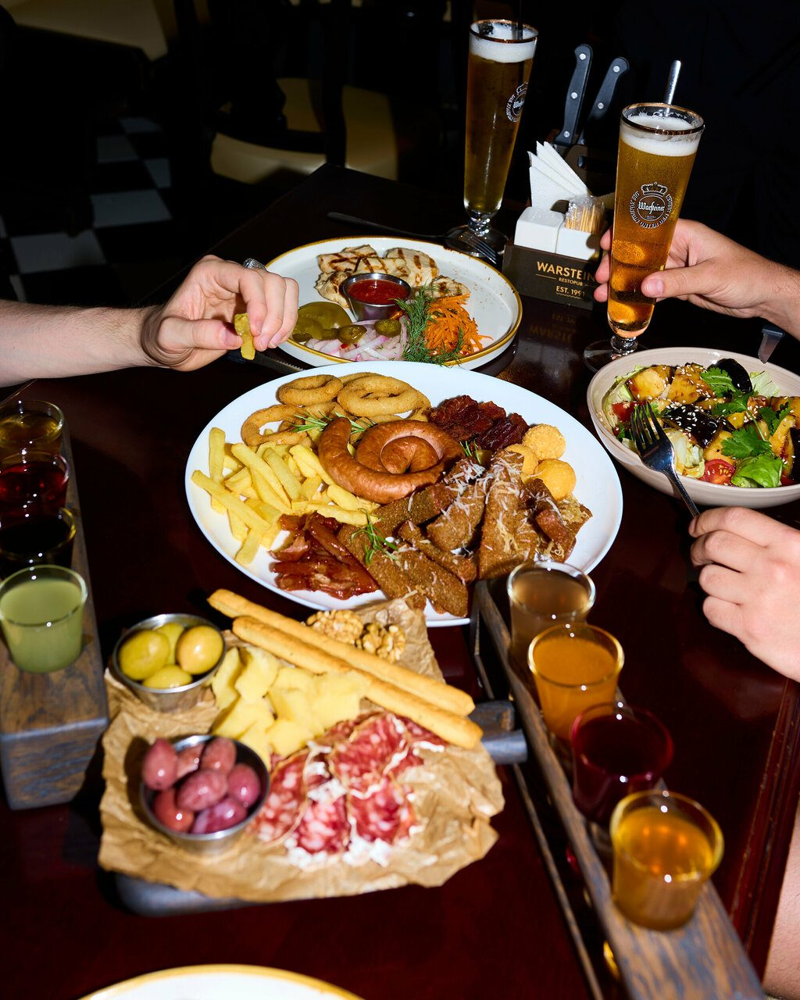
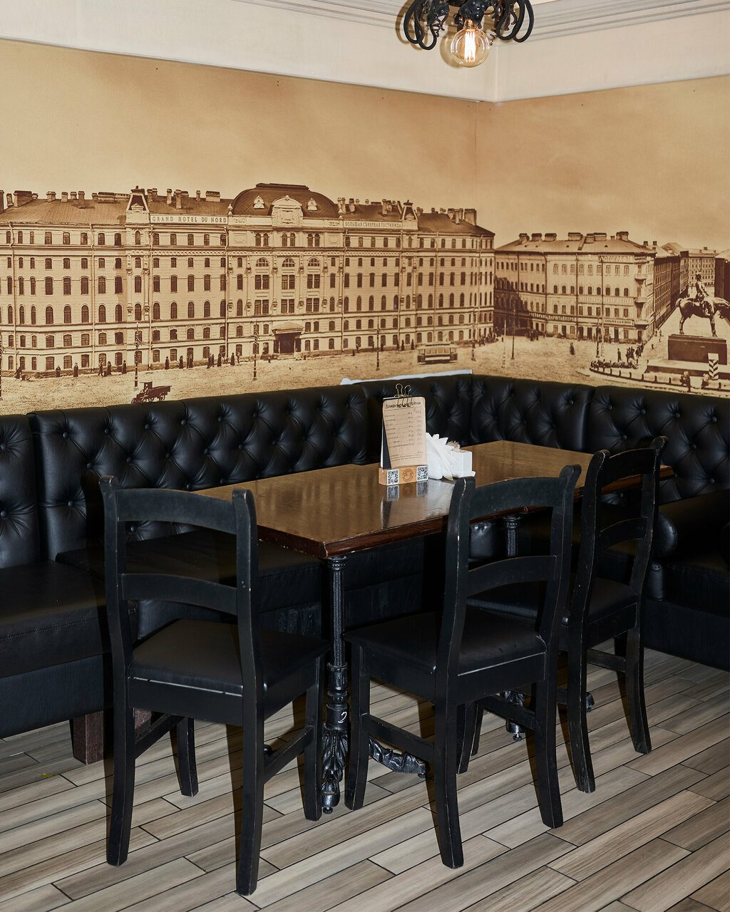
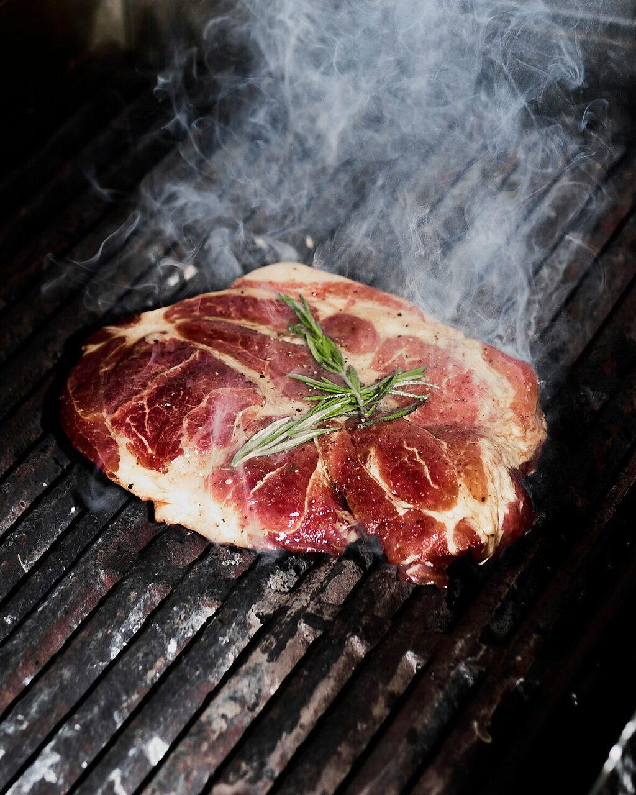
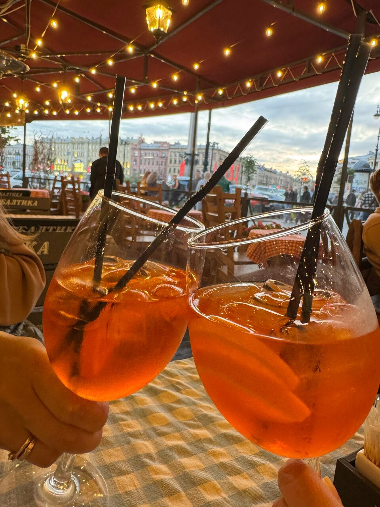
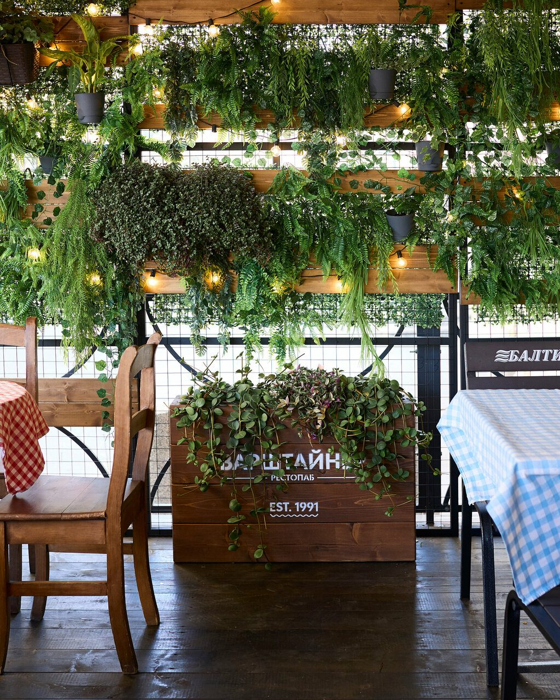
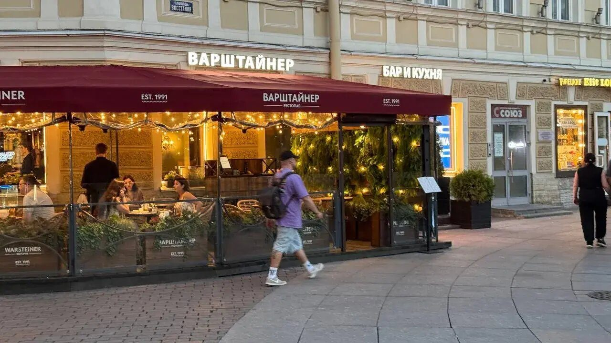

01
КухняНемецкая
Немецкая
классика
Рулька «Айсбан» на 750 граммов, баварские колбаски, шницель и домашние пельмени из оленины. Порции — щедрые, как положено.
Смотреть меню →
Рулька · 1550 ₽(01) — О нас
Тёмное дерево, латунь и шахматный пол. Здесь пьют свежий Warsteiner, едят рульку размером с тарелку и задерживаются дольше, чем планировали.

Рулька «Айсбан» на 750 граммов, баварские колбаски, шницель и домашние пельмени из оленины. Порции — щедрые, как положено.
Смотреть меню →
Рулька · 1550 ₽Стриплойн, томагавк из свиной корейки, шашлыки и рыба — всё на углях в печи-гриле Josper.
Гриль-меню →
Стриплойн · 2100 ₽Warsteiner, крафт от Василеостровской пивоварни и двенадцать домашних настоек — от облепихи до сливочной ириски.
В бар →
Сет настоек · 2500 ₽Зелень, цветы и Невский перед глазами. Вечером — уличные музыканты, днём — бизнес-ланч на воздухе.
Подробнее →
ВерандаДни рождения, корпоративы и трансляции. Большое мясное блюдо на компанию и пивные сеты.
Все форматы → до 80 гостей
до 80 гостей(02) — Гости о нас · Яндекс Карты · Хорошее место 2026
